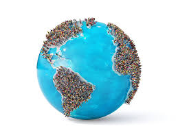
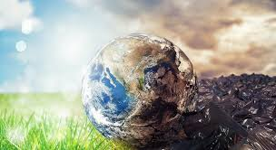
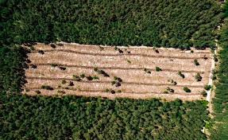
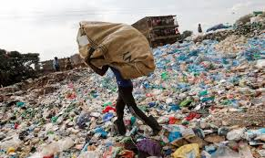
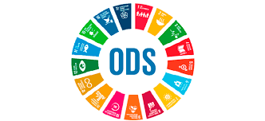
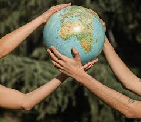

El desarrollo sostenible es fundamental para garantizar el bienestar de las generaciones futuras. La sociedad enfrenta grandes desafíos ambientales y sociales, los cuales impactan directamente en la economía y el equilibrio ecológico del planeta. En este capítulo se analizarán estos retos, su impacto en la sociedad y los sectores productivos, así como las principales estrategias para abordarlos y minimizar sus efectos negativos.
2. Principales retos ambientales y sociales
En los últimos años, hemos visto cómo las acciones humanas han sobrepasado los límites que el planeta puede soportar. La evidencia científica muestra que nuestras prácticas han acelerado el cambio climático, han contaminado el aire y el agua y han contribuido a la desaparición de muchas especies de flora y fauna. Además, esta situación ha incrementado el riesgo de transmisión de enfermedades, al punto de que pueden surgir nuevas pandemias.
Todo esto ha generado un impacto ambiental muy negativo, afectando no solo los ecosistemas, sino también nuestra calidad de vida. Estamos viviendo una crisis ambiental que se ha convertido en una preocupación global y que requiere una respuesta inmediata por parte de toda la sociedad. Es fundamental que tomemos conciencia y adoptemos medidas tanto individuales como colectivas para enfrentar este problema.
Si no actuamos ahora, las consecuencias seguirán agravándose, poniendo en peligro la estabilidad del planeta y el bienestar de las futuras generaciones. Por eso, es necesario buscar soluciones que nos permitan no solo reducir el daño que ya hemos causado, sino también construir un futuro sostenible en el que podamos convivir en equilibrio con la naturaleza.
2.1. Cambio climático
El cambio climático es una de las principales amenazas globales y representa un desafío crítico para la humanidad. Este fenómeno es causado, en gran parte, por la actividad humana, principalmente a través de la emisión de gases de efecto invernadero (GEI) como el dióxido de carbono (CO₂), el metano (CH₄) y el óxido nitroso (N₂O). Dichos gases se acumulan en la atmósfera, atrapando el calor y alterando los patrones climáticos naturales.
Algunos de los principales efectos del cambio climático incluyen:
Aumento de las temperaturas globales: Esto afecta directamente a los ecosistemas, provocando la alteración de los ciclos climáticos y biológicos de muchas especies.
Mayor frecuencia e intensidad de fenómenos climáticos extremos:Huracanes, tifones, olas de calor, sequías prolongadas e inundaciones se han vuelto más comunes y devastadores en distintas regiones del planeta.
Deshielo de los polos y aumento del nivel del mar: Como consecuencia del calentamiento global, los glaciares y las capas de hielo en los polos están derritiéndose rápidamente, lo que incrementa el nivel del mar y amenaza la existencia de comunidades costeras.
Pérdida de biodiversidad y alteración de hábitats: Muchos ecosistemas están desapareciendo o degradándose debido a cambios en la temperatura y disponibilidad de recursos naturales, afectando la fauna y flora de diversas regiones.
Impacto en la salud humana: El cambio climático ha aumentado la prevalencia de enfermedades respiratorias y cardiovasculares debido a la contaminación del aire y las olas de calor. Además, el incremento de enfermedades transmitidas por vectores como el dengue o la malaria se relaciona con la expansión de hábitats favorables para estos organismos.
Para mitigar estos efectos, es fundamental adoptar medidas que reduzcan las emisiones de CO₂ y otros gases de efecto invernadero. Algunas de las estrategias más efectivas incluyen:
Transición a energías renovables, como la solar, eólica, hidráulica y geotérmica.
Uso eficiente de los recursos energéticos, promoviendo la eficiencia energética en industrias, transporte y hogares.
Reforestación y conservación de ecosistemas naturales, ya que los bosques y océanos actúan como sumideros de carbono.
Implementación de políticas de sostenibilidad y reducción de residuos, fomentando una economía circular basada en la reutilización y el reciclaje.
Concientización y educación ambiental, para que la sociedad adopte hábitos más responsables con el medioambiente.
2.2. Superpoblación

El crecimiento acelerado de la población mundial ha generado un aumento significativo en la demanda de recursos naturales, lo que representa un desafío para la sostenibilidad del planeta. Actualmente, la población mundial supera los 8.000 millones de personas, y las proyecciones indican que seguirá aumentando en las próximas décadas. Este fenómeno ejerce una gran presión sobre los ecosistemas y dificulta la distribución equitativa de los recursos.
Las principales consecuencias de la superpoblación incluyen:
Escasez de agua potable y reducción de reservas hídricas: A medida que crece la población, aumenta la demanda de agua, lo que genera crisis hídricas en muchas regiones del mundo.
Deforestación masiva para la expansión urbana y agrícola: La necesidad de espacio para viviendas y cultivos provoca la destrucción de bosques, lo que contribuye al cambio climático y la pérdida de biodiversidad.
Aumento de la contaminación y generación de residuos: El consumo masivo de productos y servicios conlleva un incremento en la producción de desechos, lo que afecta la calidad del aire, el agua y los suelos.
Presión sobre los ecosistemas y la biodiversidad: La expansión de actividades humanas reduce los hábitats naturales de muchas especies, llevándolas al peligro de extinción.
Desigualdades en el acceso a recursos esenciales: El crecimiento demográfico descontrolado ha intensificado problemas como el hambre, la pobreza y la falta de acceso a servicios básicos como la educación y la salud.
Para abordar este problema, es esencial implementar políticas que favorezcan un crecimiento poblacional sostenible. Algunas soluciones incluyen:
Fomentar la planificación familiar y el acceso a métodos anticonceptivos para reducir las tasas de natalidad en regiones con sobrepoblación.
Uso eficiente de los recursos naturales, promoviendo el consumo responsable y reduciendo el desperdicio.
Transición hacia modelos de economía circular, donde los productos y materiales sean reutilizados, reciclados y aprovechados al máximo para disminuir la generación de residuos.
Inversión en educación y concienciación, ya que sociedades más educadas tienden a tener menores tasas de natalidad y mayor compromiso con el medioambiente.
Desarrollo de infraestructuras sostenibles que permitan un mejor uso del espacio y los recursos, minimizando el impacto ambiental.
El equilibrio entre la población y los recursos naturales es clave para garantizar la sostenibilidad del planeta en el futuro. Es necesario actuar con responsabilidad y adoptar medidas que permitan un desarrollo armónico con el medioambiente.
2.3. Consumo de agua
El agua es un recurso fundamental para la vida en el planeta, pero su disponibilidad está siendo amenazada debido al crecimiento de la población, el cambio climático y el uso ineficiente de este recurso. La sobreexplotación y contaminación del agua tienen graves consecuencias para los ecosistemas, la agricultura, la industria y las comunidades humanas.
Algunos de los principales factores que afectan el consumo de agua incluyen:
Uso excesivo del agua en la agricultura y la industria: La agricultura es responsable de aproximadamente el 70% del consumo mundial de agua dulce. Muchas técnicas de riego ineficientes provocan el desperdicio de grandes cantidades de agua. La industria, especialmente en sectores como la minería y la manufactura, también requiere enormes volúmenes de agua para sus procesos.
Contaminación de fuentes hídricas: El vertido de residuos industriales, plásticos, productos químicos y aguas residuales sin tratar en ríos, lagos y océanos deteriora la calidad del agua y afecta a los ecosistemas acuáticos.
Sequías prolongadas debido al cambio climático: Las alteraciones en los patrones de lluvia y las temperaturas extremas reducen la disponibilidad de agua en muchas regiones, afectando la producción de alimentos y el suministro de agua potable.
Reducción de acuíferos subterráneos: El uso intensivo de agua para la agricultura y el consumo humano ha llevado a la sobreexplotación de acuíferos subterráneos, lo que puede provocar hundimientos del suelo y la salinización del agua.
Falta de acceso a agua potable: En muchas comunidades vulnerables, el acceso al agua potable es limitado o inexistente, lo que genera problemas de salud y dificulta el desarrollo social y económico.
Para garantizar la sostenibilidad del agua, es fundamental implementar medidas como:
Optimización del riego en la agricultura, utilizando técnicas más eficientes como el riego por goteo o el uso de cultivos resistentes a la sequía.
Reutilización y reciclaje del agua en procesos industriales, promoviendo el tratamiento y reaprovechamiento del agua residual.
Protección de fuentes naturales de agua, como ríos, lagos y acuíferos, mediante regulaciones estrictas sobre el vertido de contaminantes.
Concienciación y educación sobre el consumo responsable del agua, promoviendo hábitos sostenibles en los hogares y las comunidades.
Desarrollo de infraestructuras de almacenamiento y distribución de agua, especialmente en zonas con escasez hídrica, para mejorar la gestión de este recurso.
El uso eficiente y responsable del agua es clave para garantizar la seguridad hídrica en el futuro y preservar los ecosistemas acuáticos.
2.4. Contaminación

La contaminación ambiental es uno de los mayores problemas globales y tiene efectos devastadores en los ecosistemas, la biodiversidad y la salud humana. Las actividades humanas han generado un incremento alarmante de sustancias contaminantes en el aire, el agua y el suelo, lo que altera el equilibrio natural del planeta.
Los principales tipos de contaminación incluyen:
Contaminación del aire:Provocada por la emisión de gases contaminantes de fábricas, vehículos y la quema de combustibles fósiles. Este tipo de contaminación está directamente relacionado con el cambio climático y el aumento de enfermedades respiratorias como el asma y la bronquitis crónica.
Contaminación del agua:Se produce por el vertido de sustancias tóxicas en cuerpos de agua, afectando la biodiversidad acuática y la calidad del agua potable. Los derrames de petróleo, los plásticos en los océanos y los pesticidas agrícolas son algunos de los principales responsables de esta contaminación.
Contaminación del suelo: Ocurre cuando productos químicos como pesticidas, fertilizantes y desechos industriales se filtran en la tierra, reduciendo su fertilidad y contaminando los cultivos. Además, el mal manejo de residuos sólidos contribuye a la degradación del suelo y a la proliferación de enfermedades.
Contaminación acústica: Es el resultado del ruido excesivo generado por el tráfico, la industria y las actividades urbanas. Afecta la calidad de vida y la salud mental de las personas, causando estrés, insomnio y problemas auditivos.
Contaminación lumínica: El exceso de iluminación artificial en ciudades altera los ritmos naturales de muchas especies y afecta la calidad del sueño en los seres humanos.
Para combatir la contaminación es fundamental regular las emisiones, fomentar el reciclaje y promover el uso de materiales biodegradables.
2.5. Deforestación

La deforestación es uno de los problemas ambientales más graves a nivel mundial. La tala indiscriminada de bosques y selvas tiene consecuencias devastadoras para la biodiversidad, el clima y las comunidades humanas. Cada año, millones de hectáreas de bosques son destruidas, lo que acelera el cambio climático y reduce los hábitats naturales de numerosas especies.
Principales causas de la deforestación:
Expansión agrícola y ganadera: Grandes extensiones de bosques son destruidas para dar paso a cultivos como la soja, el aceite de palma y la ganadería intensiva.
Urbanización acelerada y construcción de infraestructuras: La expansión de ciudades, carreteras y presas requiere grandes cantidades de madera y suelo, lo que lleva a la deforestación.
Explotación forestal para la obtención de madera y papel: La tala de árboles para la producción de muebles, papel y otros productos de madera provoca la degradación de los bosques.
Incendios forestales provocados por el cambio climático y la actividad humana.
Extracción de recursos naturales: La minería, la extracción de petróleo y la producción de biocombustibles requieren la deforestación de grandes áreas de selva tropical y bosques nativos.
Consecuencias de la deforestación:
Reducción de la capacidad de absorción de CO₂: Los árboles absorben dióxido de carbono y ayudan a regular el clima. Su destrucción contribuye al calentamiento global.
Pérdida de biodiversidad y desaparición de especies: Muchos animales y plantas dependen de los bosques para sobrevivir. La deforestación provoca la extinción de miles de especies cada año.
Disminución de la calidad del suelo y aumento de la erosión: La deforestación deja el suelo expuesto a la erosión y reduce su fertilidad, afectando la producción de alimentos.
Alteraciones en el ciclo del agua: La eliminación de árboles reduce la humedad en el ambiente y puede provocar cambios en los patrones de lluvia, lo que disminuye la disponibilidad de agua en muchas regiones.
Impacto en comunidades indígenas y locales: Muchas comunidades dependen de los bosques para su sustento y su cultura. La deforestación los desplaza y reduce sus recursos naturales.
Soluciones para frenar la deforestación:
Programas de reforestación y restauración ecológica: La plantación de árboles ayuda a recuperar ecosistemas dañados.
Uso sostenible de los recursos forestales: Promover certificaciones como FSC (Forest Stewardship Council) garantiza una gestión responsable de los bosques.
Políticas de protección ambiental: Es necesario fortalecer las leyes contra la tala ilegal y establecer reservas naturales protegidas.
Consumo responsable: Reducir el uso de productos derivados de la madera no sostenible, reciclar papel y apoyar marcas que fomenten la sostenibilidad.
Promoción de prácticas agrícolas sostenibles: La agroforestería y el uso de técnicas de cultivo regenerativo pueden reducir la necesidad de talar bosques para la agricultura.
2.6.Otros problemas ambientales
Además de los problemas mencionados, existen otros retos ambientales que requieren atención:
Pérdida de biodiversidad: La destrucción de hábitats y el cambio climático ponen en peligro miles de especies.
Gestión de residuos: El aumento de la basura, especialmente los plásticos, afecta los ecosistemas terrestres y marinos.
Desertificación: La degradación de tierras fértiles por sequías y malas prácticas agrícolas limita la producción de alimentos.
Uso excesivo de fertilizantes y pesticidas: Contamina suelos y fuentes de agua, afectando la biodiversidad y la salud humana.
Estos problemas requieren estrategias globales que incluyan políticas gubernamentales, avances tecnológicos y cambios en los hábitos de consumo.
3. Impacto de los actuales problemas medioambientales
El bienestar de la humanidad y de las futuras generaciones depende directamente de la biodiversidad y del mantenimiento de los ecosistemas.
A medida que la población aumenta, los recursos naturales se van agotando. Por este motivo es urgente mejorar la sostenibilidad para asegurar la supervivencia; también es
fundamental planificar y minimizar cualquier actividad personal o profesional que pueda alterar el medioambiente.
Los principales retos medioambientales que se han estudiado en el apartado anterior no solo tienen consecuencias para el propio planeta, sino que también tienen un impacto importante para las personas y para los sectores productivos, como se verá a continuación.
3.1. Impacto sobre las personas

Los problemas medioambientales afectan directamente la calidad de vida de las personas en diferentes aspectos:
Salud pública: La contaminación del aire provoca enfermedades respiratorias como asma, bronquitis y enfermedades cardiovasculares. La contaminación del agua puede causar infecciones gastrointestinales y problemas en la piel.
Inseguridad alimentaria: El cambio climático afecta la producción de alimentos debido a sequías, inundaciones y cambios en los patrones climáticos, lo que eleva los precios de los productos básicos y aumenta la malnutrición.
Acceso al agua potable: La escasez de agua afecta a millones de personas en el mundo, dificultando el acceso al agua limpia y provocando problemas de higiene y enfermedades.
Fenómenos climáticos extremos: Huracanes, tormentas y olas de calor afectan a comunidades enteras, provocando muertes, desplazamientos forzados y daños materiales.
Impacto en la salud mental: La inseguridad derivada de desastres naturales y el deterioro ambiental genera estrés, ansiedad y depresión en muchas personas.
Es necesario implementar políticas públicas que protejan a las poblaciones vulnerables y minimicen los efectos negativos de los problemas ambientales.
3.2. Impacto sobre sectores productivos
Los sectores económicos también sufren las consecuencias de los problemas ambientales, lo que puede generar pérdidas económicas y afectar el empleo:
Agricultura y ganadería: Las sequías prolongadas, inundaciones y temperaturas extremas reducen la producción agrícola y ganadera, afectando la seguridad alimentaria y la economía rural.
Pesca y acuicultura: La contaminación de los océanos y la sobrepesca afectan la biodiversidad marina, reduciendo la disponibilidad de especies comerciales y generando pérdidas económicas en las comunidades pesqueras.
Industria y manufactura: La escasez de recursos naturales y las regulaciones ambientales más estrictas aumentan los costos de producción y obligan a las empresas a invertir en tecnologías más limpias.
Turismo: La degradación ambiental, la contaminación y el cambio climático impactan negativamente en el turismo, especialmente en destinos naturales y costeros que dependen de ecosistemas saludables.
Infraestructura y urbanismo: Las ciudades enfrentan desafíos debido a la contaminación del aire, la falta de acceso a agua potable y el incremento de residuos urbanos, lo que afecta la calidad de vida de sus habitantes.
Para minimizar estos impactos, es fundamental que las empresas adopten modelos de producción sostenible y reduzcan su huella ecológica.
3.3. La importancia del trabajo transversal y las alianzas

Para abordar los problemas medioambientales de manera efectiva, es necesario un enfoque coordinado que involucre a gobiernos, empresas, organizaciones y ciudadanos. Algunas estrategias clave incluyen:
Cooperación internacional: Implementación de acuerdos globales como el Acuerdo de París y los Objetivos de Desarrollo Sostenible (ODS) para reducir las emisiones de gases de efecto invernadero y proteger el medio ambiente.
Participación del sector privado: Las empresas deben adoptar prácticas sostenibles, reducir su huella de carbono y fomentar la innovación en tecnologías limpias.
Compromiso de la sociedad civil: La educación ambiental y la participación ciudadana en actividades ecológicas (como reciclaje, reforestación y reducción del consumo de plásticos) son fundamentales para promover una cultura de sostenibilidad.
Inversión en investigación y desarrollo: Fomentar el desarrollo de energías renovables, soluciones para la gestión de residuos y estrategias para la conservación de los ecosistemas.
Acciones gubernamentales: Los gobiernos deben implementar políticas públicas que fomenten el desarrollo sostenible, regulen las emisiones contaminantes y promuevan el uso eficiente de los recursos naturales.
El trabajo conjunto entre diferentes actores de la sociedad es esencial para mitigar los efectos del cambio climático y garantizar un futuro más sostenible para todos.
4. Medidas y acciones para minimizar los impactos ambientales
Para enfrentar los desafíos ambientales actuales, es fundamental adoptar una serie de medidas y acciones que permitan reducir el impacto negativo de las actividades humanas en el medioambiente. Estas acciones abarcan la protección de ecosistemas, el uso responsable de recursos naturales y el fomento de prácticas sostenibles en distintos sectores.
Protección de bosques, ríos y océanos mediante la creación de reservas naturales y áreas protegidas.
Uso responsable del agua en la agricultura, la industria y los hogares, reduciendo el desperdicio y mejorando su distribución.
Regulación de la pesca y la caza para evitar la sobreexplotación de especies y garantizar la conservación de la biodiversidad.
Reducción de la huella hídrica en la producción de bienes de consumo, promoviendo tecnologías más eficientes.
Fomento de la agricultura sostenible y ecológica, incentivando el uso de técnicas de cultivo regenerativo y la reducción de productos químicos nocivos.
4.1. Eficiencia energética
La eficiencia energética es clave para reducir el consumo de recursos naturales y minimizar el impacto ambiental de la producción y el uso de energía. Adoptar medidas de eficiencia energética no solo contribuye a la sostenibilidad, sino que también genera ahorros económicos y reduce la dependencia de fuentes de energía fósil.
Algunas estrategias para mejorar la eficiencia energética incluyen:
Uso de bombillas LED y electrodomésticos de bajo consumo que requieren menos energía y tienen una mayor vida útil.
Mejora del aislamiento térmico en edificios para reducir el uso de calefacción y aire acondicionado, disminuyendo el consumo de energía.
Automatización de sistemas de iluminación y climatización en oficinas y hogares, optimizando su uso y evitando el desperdicio energético.
Fomento de energías renovables como la solar, eólica y geotérmica, promoviendo la transición hacia un modelo energético más limpio.
Incentivos gubernamentales para la eficiencia energética en industrias y viviendas, impulsando la adopción de tecnologías más sostenibles.
Reducir el consumo de energía no solo disminuye las emisiones de CO₂, sino que también ayuda a combatir el cambio climático y mejora la calidad del aire.
4.2. Gestión de residuos
La gestión inadecuada de residuos es una de las principales causas de contaminación en el mundo. El exceso de plásticos, desechos industriales y residuos electrónicos contribuye al deterioro del medioambiente y afecta la salud humana. Para reducir su impacto, es esencial adoptar estrategias eficaces de manejo de residuos.
Algunas medidas clave para una mejor gestión de residuos incluyen:
Implementar sistemas de reciclaje eficientes en hogares, empresas y centros educativos, promoviendo la separación de residuos.
Fomentar el uso de materiales biodegradables y envases reutilizables para reducir la cantidad de plásticos de un solo uso.
Reducir el desperdicio de alimentos mediante una mejor planificación del consumo y la promoción de prácticas como el compostaje.
Promover la recolección selectiva de residuos y el uso de tecnologías de reciclaje avanzadas para maximizar la reutilización de materiales.
Desarrollar políticas de "residuo cero" en comunidades y ciudades, estableciendo normativas para la reducción de residuos industriales y domésticos.
La economía circular, basada en reducir, reutilizar y reciclar, es fundamental para minimizar la cantidad de residuos generados y disminuir la presión sobre los ecosistemas naturales.
4.3. Conservación de los recursos naturales
Los recursos naturales son esenciales para la vida y el desarrollo humano. Sin embargo, la sobreexplotación, la contaminación y el cambio climático están deteriorando los ecosistemas a un ritmo alarmante. Para garantizar la sostenibilidad del planeta, es necesario implementar estrategias de conservación y uso responsable de estos recursos.
Algunas acciones clave para la conservación de los recursos naturales incluyen:
Protección de ecosistemas frágiles mediante la creación de reservas naturales y la implementación de programas de reforestación.
Uso eficiente del agua, evitando su desperdicio en actividades agrícolas, industriales y domésticas.
Preservación de la biodiversidad, protegiendo especies en peligro de extinción y promoviendo la restauración de hábitats naturales.
Gestión sostenible de los suelos, aplicando técnicas de agricultura regenerativa para evitar la desertificación y la erosión.
Fomento del consumo responsable, reduciendo el uso de productos que contribuyan a la degradación ambiental.
Los ecosistemas sanos aseguran el equilibrio de la biodiversidad y el acceso a recursos esenciales como el agua, el aire limpio y los alimentos. La conservación de estos sistemas naturales es fundamental para la supervivencia de las futuras generaciones.
4.4. Control de contaminación
La contaminación del aire, el agua y el suelo es una de las principales amenazas para la salud del planeta y de sus habitantes. La actividad humana ha incrementado significativamente los niveles de contaminantes, afectando la calidad de vida y contribuyendo al cambio climático. Para reducir este impacto, se deben implementar políticas y tecnologías que controlen y minimicen la emisión de sustancias nocivas.
Algunas de las estrategias más efectivas para el control de la contaminación incluyen:
Establecer regulaciones más estrictas para las emisiones industriales y vehiculares, promoviendo normas ambientales más rigurosas.
Fomentar el uso de filtros y tecnologías de reducción de emisiones en fábricas, vehículos y sistemas de calefacción.
Monitoreo constante de la calidad del aire y del agua en zonas urbanas, con el fin de detectar y prevenir niveles peligrosos de contaminación.
Control del uso de pesticidas y fertilizantes en la agricultura, para evitar la contaminación de suelos y fuentes de agua potable.
Reducción de la producción y el uso de plásticos de un solo uso, promoviendo alternativas biodegradables y sistemas de reciclaje eficientes.
El control de la contaminación requiere la colaboración entre gobiernos, empresas y la sociedad para desarrollar estrategias que reduzcan el impacto ambiental y protejan la salud pública.
4.5. Movilidad sostenible
El sector del transporte es una de las mayores fuentes de contaminación y emisiones de gases de efecto invernadero. La dependencia de combustibles fósiles en automóviles, aviones y barcos contribuye significativamente al calentamiento global. Para reducir su impacto, es necesario fomentar una movilidad sostenible que minimice la huella de carbono y mejore la calidad de vida en las ciudades.
Las estrategias para lograr una movilidad sostenible incluyen:
Fomentar el uso del transporte público eficiente y ecológico, invirtiendo en redes de autobuses eléctricos, trenes de alta velocidad y metros sostenibles.
Impulsar la adopción de vehículos eléctricos y de hidrógeno, incentivando su compra con beneficios fiscales y ampliando la infraestructura de carga.
Promover el uso de la bicicleta y la caminata en ciudades mediante la construcción de carriles exclusivos y la mejora del urbanismo sostenible.
Desarrollar políticas de teletrabajo y horarios flexibles para reducir la congestión vehicular y la contaminación.
Implementar zonas de bajas emisiones en grandes ciudades, restringiendo el acceso a vehículos altamente contaminantes.
El desarrollo de infraestructuras adecuadas y el compromiso ciudadano son clave para una movilidad más limpia y eficiente, mejorando la salud ambiental y reduciendo el impacto del transporte en el cambio climático.
4.6. Innovación tecnológica
La innovación tecnológica juega un papel fundamental en la lucha contra el cambio climático y en la construcción de un futuro sostenible. La ciencia y la tecnología han permitido el desarrollo de soluciones avanzadas para optimizar el uso de recursos, reducir la contaminación y mitigar los efectos negativos de la actividad humana en el medio ambiente.
Algunas de las soluciones tecnológicas más prometedoras incluyen:
Desarrollo de materiales biodegradables y sostenibles que reemplacen plásticos de un solo uso, reduciendo la contaminación en océanos y ecosistemas terrestres.
Uso de inteligencia artificial (IA) y big data para mejorar la eficiencia energética en industrias, optimizando el consumo de electricidad y reduciendo las emisiones de CO₂.
Aplicación de nanotecnología en la purificación del agua y la descontaminación del aire, mejorando la calidad ambiental en zonas urbanas e industriales.
Desarrollo de biocombustibles y energías alternativas, como el hidrógeno verde, para sustituir los combustibles fósiles altamente contaminantes.
Uso de blockchain para garantizar la trazabilidad y transparencia en la producción sostenible de alimentos, textiles y otros bienes de consumo.
Implementación de sistemas de captura y almacenamiento de carbono, que ayudan a reducir las concentraciones de CO₂ en la atmósfera.
La inversión en tecnología verde y el impulso a la investigación científica son esenciales para avanzar hacia una economía más sostenible y menos dependiente de recursos contaminantes. A medida que las innovaciones se desarrollan, es crucial que sean accesibles y escalables para su implementación global.
4.7. Educación y sensibilización

La educación ambiental y la concienciación social son herramientas esenciales para promover un cambio cultural hacia la sostenibilidad. La falta de información y sensibilización ha sido una de las principales barreras para la adopción de hábitos responsables con el medio ambiente. Por ello, es fundamental que tanto las instituciones educativas como los gobiernos y las empresas fomenten una mayor educación sobre el impacto ambiental de nuestras acciones.
Algunas estrategias clave para promover la educación y sensibilización ambiental incluyen:
Incorporar la educación ambiental en los programas escolares desde edades tempranas, enseñando a los niños sobre el reciclaje, la conservación del agua y la importancia de los ecosistemas.
Realizar campañas de concienciación sobre reciclaje, ahorro energético y consumo responsable a nivel local, nacional e internacional.
Fomentar la participación ciudadana en actividades de reforestación, limpieza de espacios naturales y protección de especies en peligro de extinción.
Promover la responsabilidad social en empresas y consumidores, incentivando prácticas sostenibles en la producción y el consumo de bienes y servicios.
Utilizar las redes sociales y medios digitales para difundir información ambiental y movilizar a las comunidades en la lucha contra la crisis climática.
Impulsar iniciativas de voluntariado ambiental, donde los ciudadanos puedan involucrarse activamente en proyectos ecológicos.
El conocimiento es la base del cambio, y la acción colectiva es fundamental para enfrentar los desafíos ambientales de manera efectiva. Solo con una sociedad informada y comprometida será posible construir un futuro más verde y sostenible.